동료 모션 실제 캡처 대표 장면 비교
실제 Unity Windows Editor 캡처에서 동료별 개선 전 대기 1장과 개선 후 대기·들숨·눈감음·일반 공격 접촉·피격 5장, 대표 전장 6장을 골랐습니다. 원본 PNG를 그대로 복사했으며, 서로 떨어진 순간을 연속 동작처럼 재생하지 않습니다.
확대 비교는 6화 전장 위 검사용 기본무기 동료 1명, 전장은 해당 동료를 포함한 임시 6명 편성입니다. 알펜의 개선 전은 이미 적용된 기존 시범 원화입니다. PNG 관측 간격은 실행 성능이 아니며, 2340×1080은 Windows Editor 화면 비율 검사입니다. Android 실기기·자연 합류·전투 계산·성장·모든 맵·장시간 성능을 검증한 결과가 아닙니다. 자동 통과와 사람의 시각 승인은 별개입니다.
원본 해시·관측값·검토 범위 · 전후 대기 빠른 검수 · 대표 장면
크레스
정면에서 따로 관측한 순간입니다. 개선 전 대기는 크기·접지 비교 기준이며 개선 후 공격·피격과 같은 동작의 전후 비교가 아닙니다.
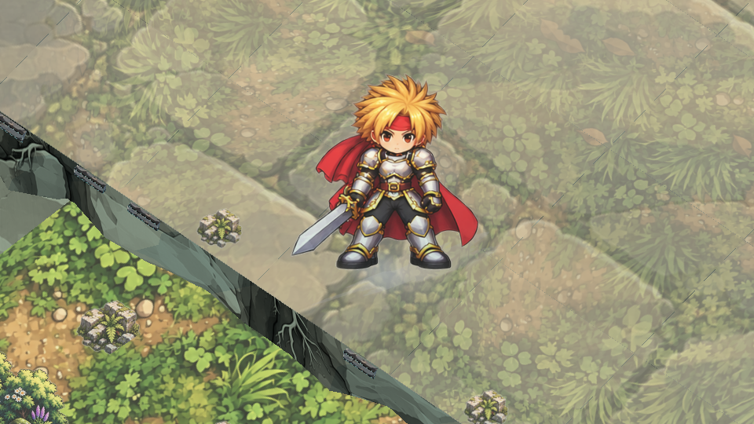
크레스 · 개선 전 · 대기idle · 관측 경과 0.213초 · 게임 시간 216.570초 · Unity 프레임 50635 · cless-hq_0_0
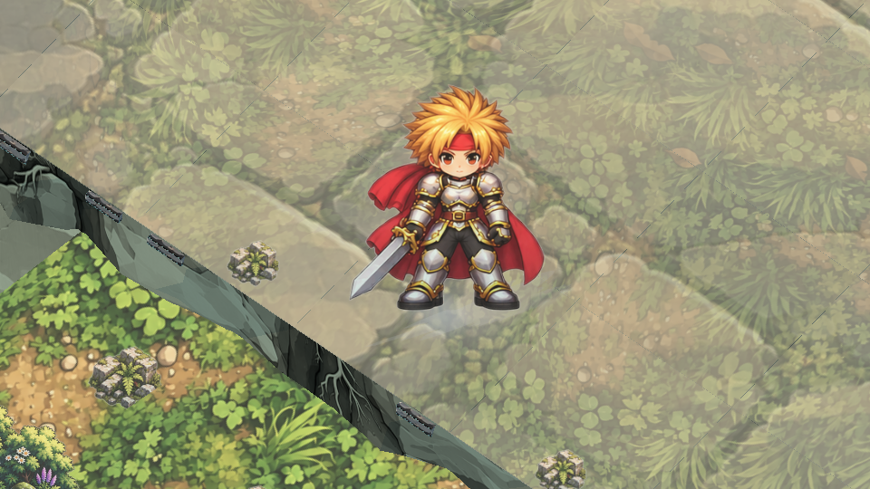
크레스 · 개선 후 · 대기idle · 관측 경과 0.208초 · 게임 시간 250.980초 · Unity 프레임 53879 · cless-roster-idle-front-0
크레스 · 개선 후 · 들숨idle · 관측 경과 1.062초 · 게임 시간 251.834초 · Unity 프레임 53970 · cless-roster-idle-front-1
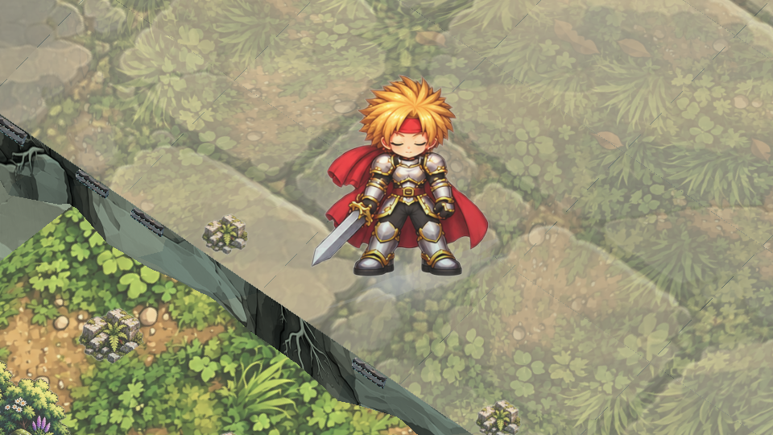
크레스 · 개선 후 · 눈감음idle · 관측 경과 4.465초 · 게임 시간 255.237초 · Unity 프레임 54355 · cless-roster-idle-front-2
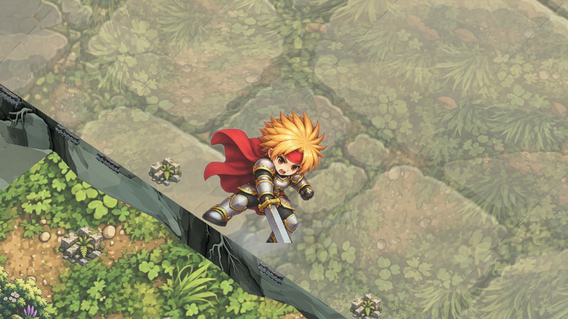
크레스 · 개선 후 · 일반 공격 접촉attack-release · 관측 경과 0.369초 · 게임 시간 257.204초 · Unity 프레임 54548 · cless-roster-attack-front-1
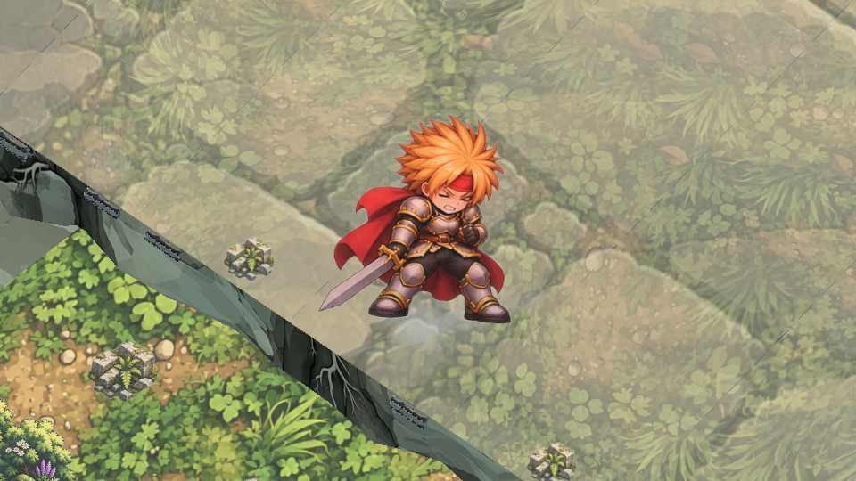
크레스 · 개선 후 · 피격damage · 관측 경과 0.056초 · 게임 시간 258.200초 · Unity 프레임 54563 · cless-roster-damage-front-0
민트
정면에서 따로 관측한 순간입니다. 개선 전 대기는 크기·접지 비교 기준이며 개선 후 공격·피격과 같은 동작의 전후 비교가 아닙니다.
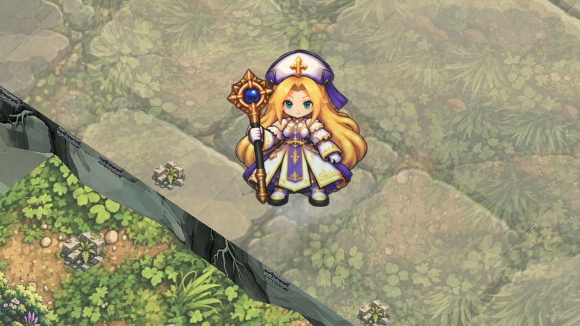
민트 · 개선 전 · 대기idle · 관측 경과 0.182초 · 게임 시간 299.136초 · Unity 프레임 59402 · mint-hq_0_0
민트 · 개선 후 · 대기idle · 관측 경과 0.185초 · 게임 시간 333.581초 · Unity 프레임 62710 · mint-roster-idle-front-0
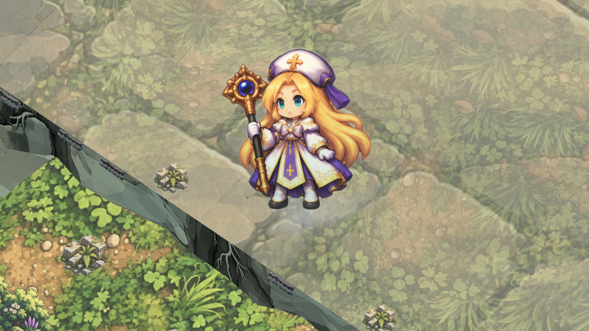
민트 · 개선 후 · 들숨idle · 관측 경과 0.353초 · 게임 시간 333.749초 · Unity 프레임 62723 · mint-roster-idle-front-1
민트 · 개선 후 · 눈감음idle · 관측 경과 3.762초 · 게임 시간 337.158초 · Unity 프레임 63103 · mint-roster-idle-front-2
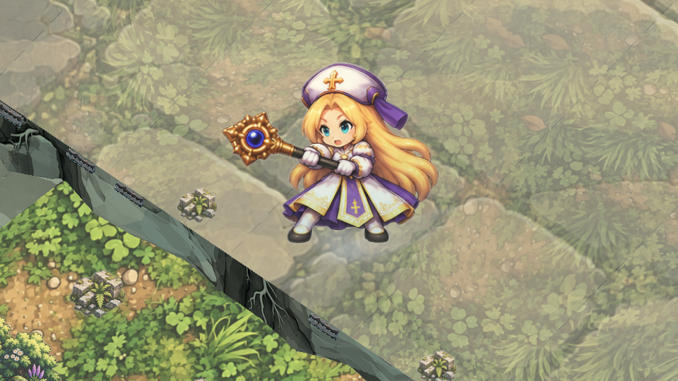
민트 · 개선 후 · 일반 공격 접촉attack-release · 관측 경과 0.386초 · 게임 시간 339.830초 · Unity 프레임 63380 · mint-roster-attack-front-1
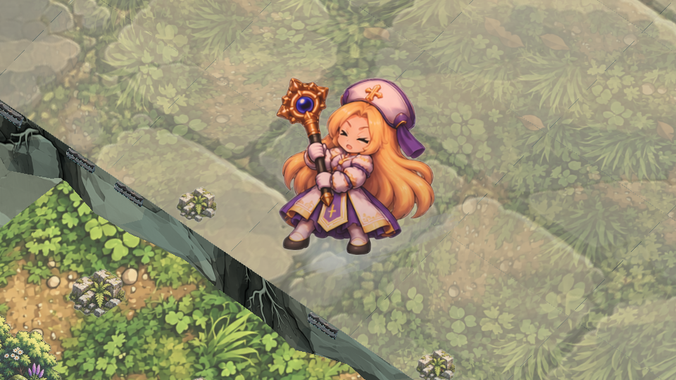
민트 · 개선 후 · 피격damage · 관측 경과 0.055초 · 게임 시간 340.785초 · Unity 프레임 63398 · mint-roster-damage-front-0
파라
정면에서 따로 관측한 순간입니다. 개선 전 대기는 크기·접지 비교 기준이며 개선 후 공격·피격과 같은 동작의 전후 비교가 아닙니다.
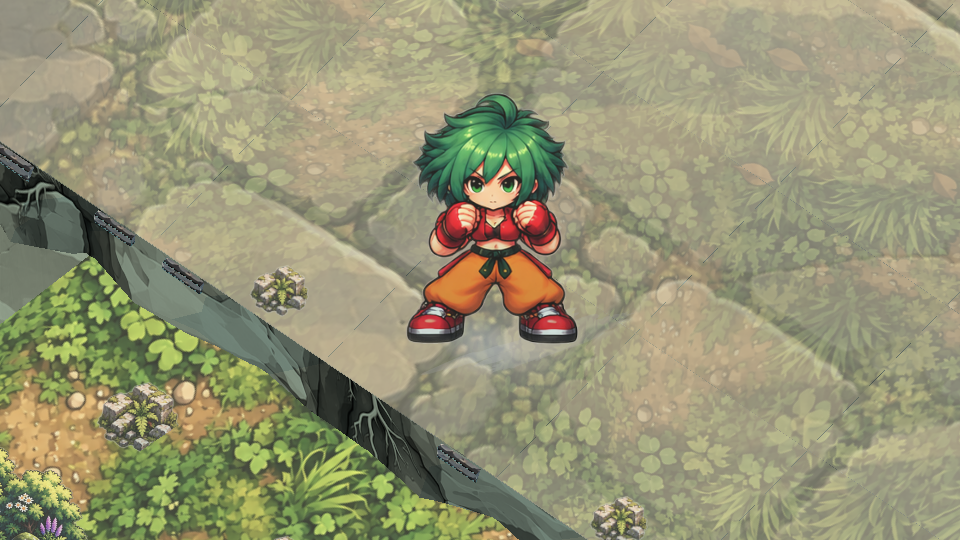
파라 · 개선 전 · 대기idle · 관측 경과 0.200초 · 게임 시간 369.585초 · Unity 프레임 66180 · farah-hq_0_0
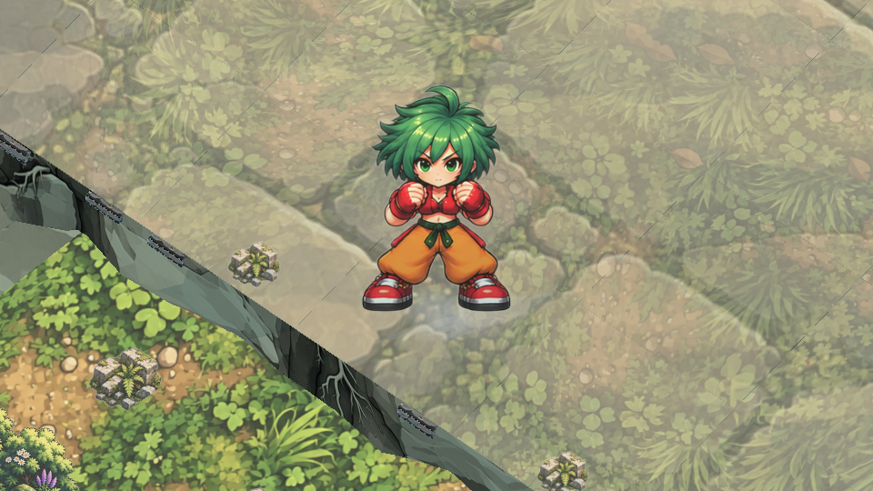
파라 · 개선 후 · 대기idle · 관측 경과 0.188초 · 게임 시간 404.009초 · Unity 프레임 69448 · farah-roster-idle-front-0
파라 · 개선 후 · 들숨idle · 관측 경과 0.525초 · 게임 시간 404.345초 · Unity 프레임 69482 · farah-roster-idle-front-1
파라 · 개선 후 · 눈감음idle · 관측 경과 9.195초 · 게임 시간 413.016초 · Unity 프레임 70648 · farah-roster-idle-front-2 · 다음 실제 주기의 별도 보충 관측
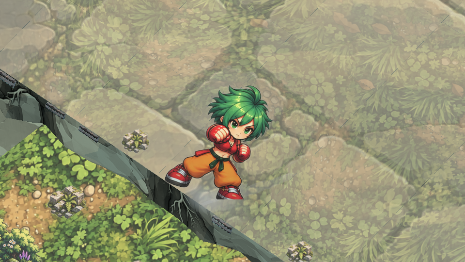
파라 · 개선 후 · 일반 공격 접촉attack-release · 관측 경과 0.376초 · 게임 시간 413.455초 · Unity 프레임 70658 · farah-roster-attack-front-1
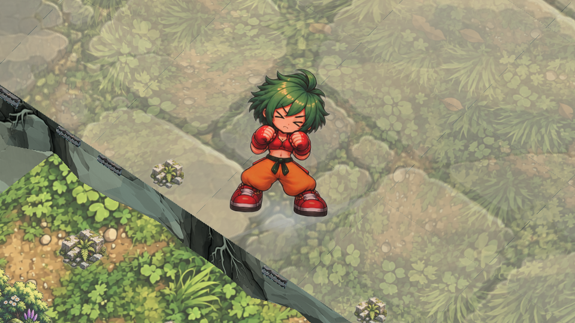
파라 · 개선 후 · 피격damage · 관측 경과 0.061초 · 게임 시간 414.405초 · Unity 프레임 70675 · farah-roster-damage-front-0
티아
정면에서 따로 관측한 순간입니다. 개선 전 대기는 크기·접지 비교 기준이며 개선 후 공격·피격과 같은 동작의 전후 비교가 아닙니다.
티아 · 개선 전 · 대기idle · 관측 경과 1.826초 · 게임 시간 450.688초 · Unity 프레임 74624 · tear-hq_0_0
티아 · 개선 후 · 대기idle · 관측 경과 1.880초 · 게임 시간 485.353초 · Unity 프레임 77859 · tear-roster-idle-front-0
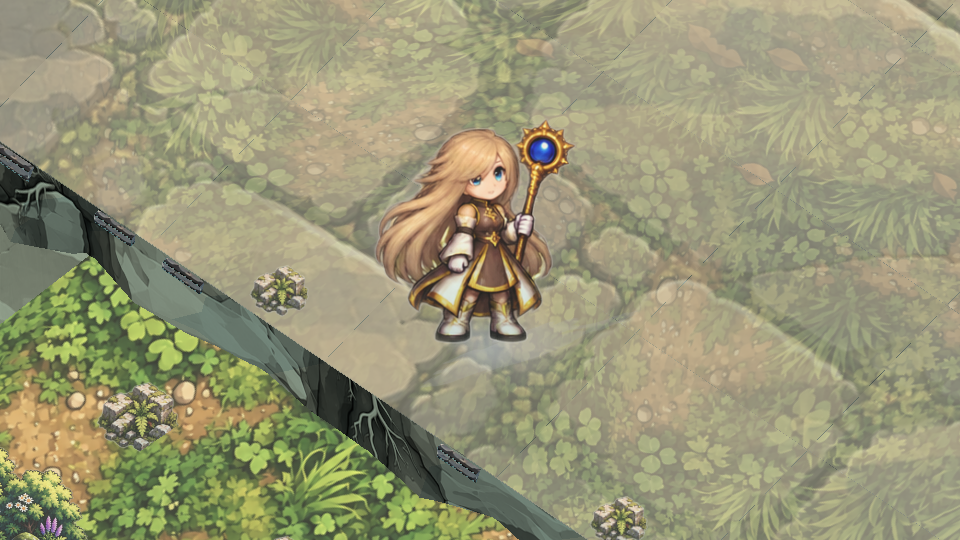
티아 · 개선 후 · 들숨idle · 관측 경과 0.188초 · 게임 시간 483.662초 · Unity 프레임 77683 · tear-roster-idle-front-1
티아 · 개선 후 · 눈감음idle · 관측 경과 3.578초 · 게임 시간 487.052초 · Unity 프레임 78058 · tear-roster-idle-front-2
티아 · 개선 후 · 일반 공격 접촉attack-release · 관측 경과 0.378초 · 게임 시간 489.866초 · Unity 프레임 78355 · tear-roster-attack-front-1
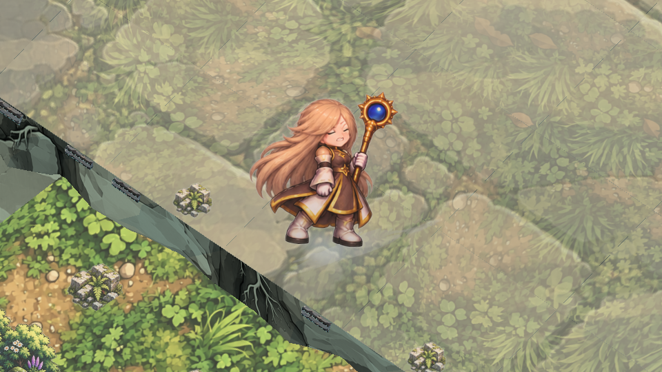
티아 · 개선 후 · 피격damage · 관측 경과 0.049초 · 게임 시간 490.843초 · Unity 프레임 78374 · tear-roster-damage-front-0
제이드
정면에서 따로 관측한 순간입니다. 개선 전 대기는 크기·접지 비교 기준이며 개선 후 공격·피격과 같은 동작의 전후 비교가 아닙니다.
제이드 · 개선 전 · 대기idle · 관측 경과 0.180초 · 게임 시간 519.150초 · Unity 프레임 81020 · jade-hq_0_0
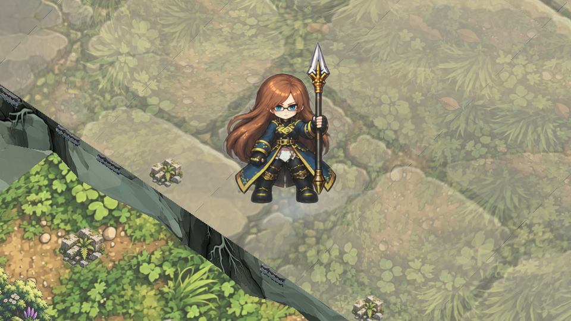
제이드 · 개선 후 · 대기idle · 관측 경과 0.179초 · 게임 시간 553.638초 · Unity 프레임 84244 · jade-roster-idle-front-0
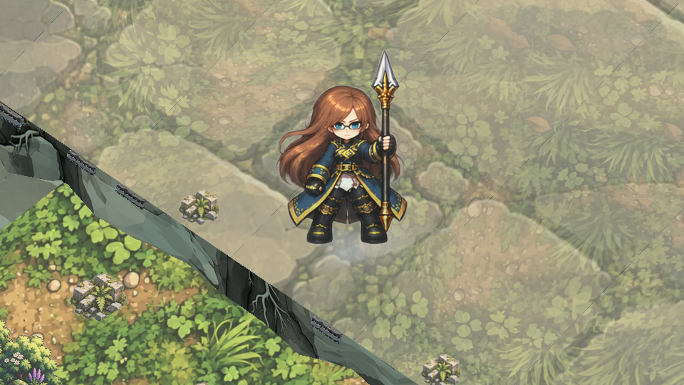
제이드 · 개선 후 · 들숨idle · 관측 경과 0.350초 · 게임 시간 553.809초 · Unity 프레임 84259 · jade-roster-idle-front-1
제이드 · 개선 후 · 눈감음idle · 관측 경과 3.756초 · 게임 시간 557.215초 · Unity 프레임 84666 · jade-roster-idle-front-2
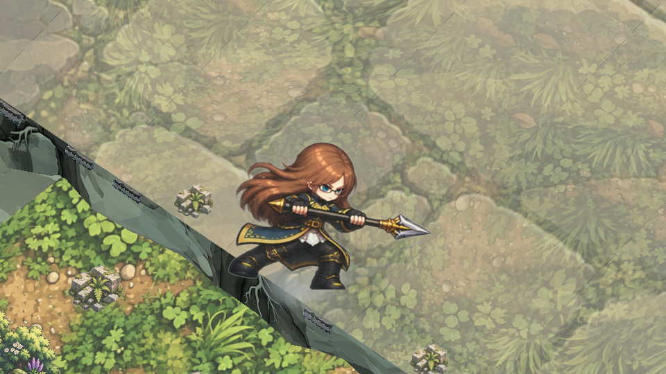
제이드 · 개선 후 · 일반 공격 접촉attack-release · 관측 경과 0.379초 · 게임 시간 559.869초 · Unity 프레임 84936 · jade-roster-attack-front-1
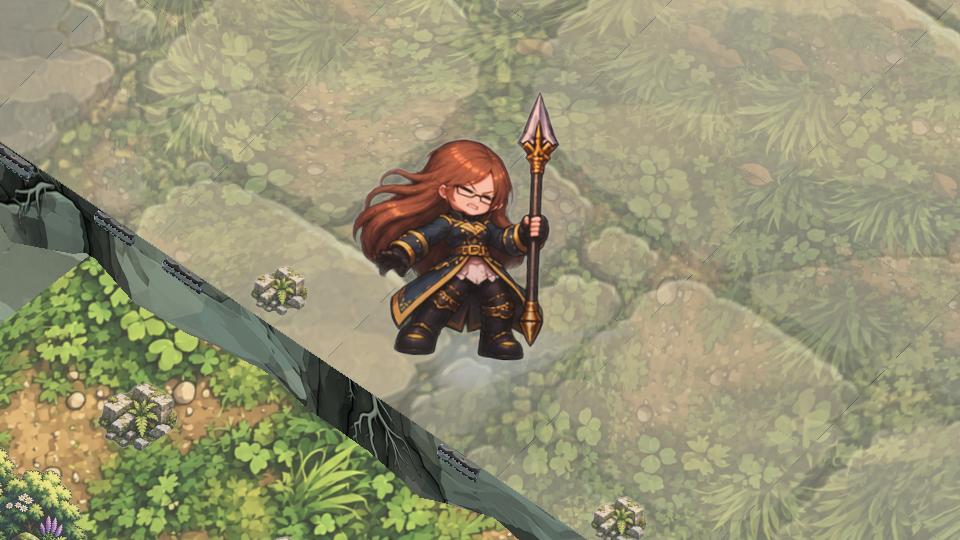
제이드 · 개선 후 · 피격damage · 관측 경과 0.055초 · 게임 시간 560.823초 · Unity 프레임 84953 · jade-roster-damage-front-0
나탈리아
정면에서 따로 관측한 순간입니다. 개선 전 대기는 크기·접지 비교 기준이며 개선 후 공격·피격과 같은 동작의 전후 비교가 아닙니다.
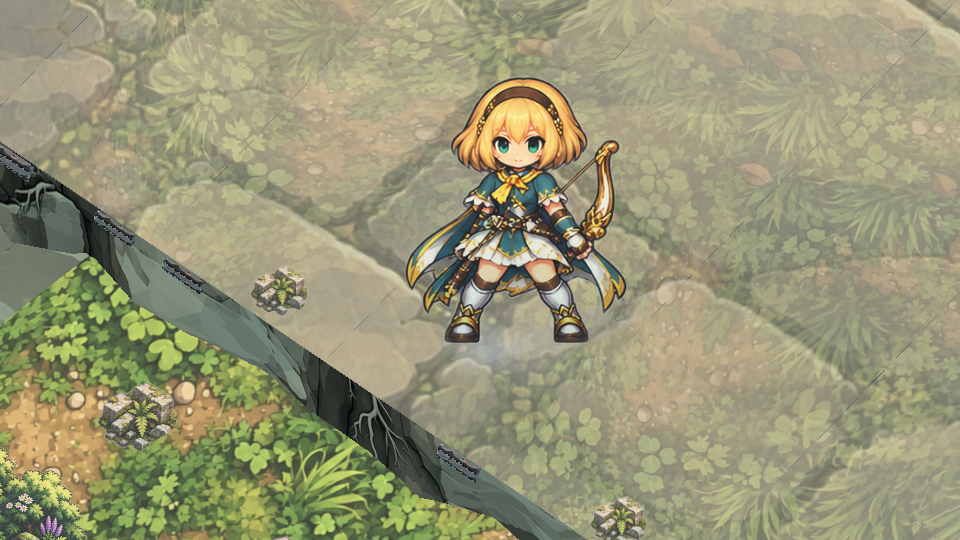
나탈리아 · 개선 전 · 대기idle · 관측 경과 0.185초 · 게임 시간 589.444초 · Unity 프레임 87712 · natalia-hq_0_0
나탈리아 · 개선 후 · 대기idle · 관측 경과 0.180초 · 게임 시간 623.979초 · Unity 프레임 90684 · natalia-roster-idle-front-0
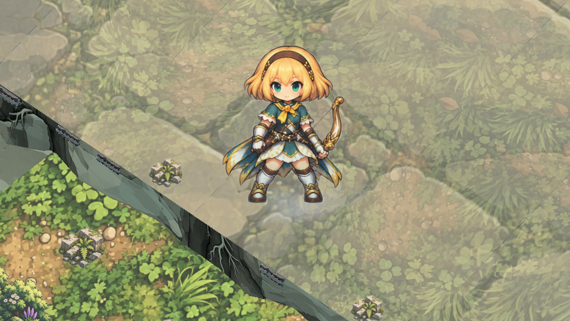
나탈리아 · 개선 후 · 들숨idle · 관측 경과 0.855초 · 게임 시간 624.654초 · Unity 프레임 90756 · natalia-roster-idle-front-1
나탈리아 · 개선 후 · 눈감음idle · 관측 경과 4.260초 · 게임 시간 628.059초 · Unity 프레임 91154 · natalia-roster-idle-front-2
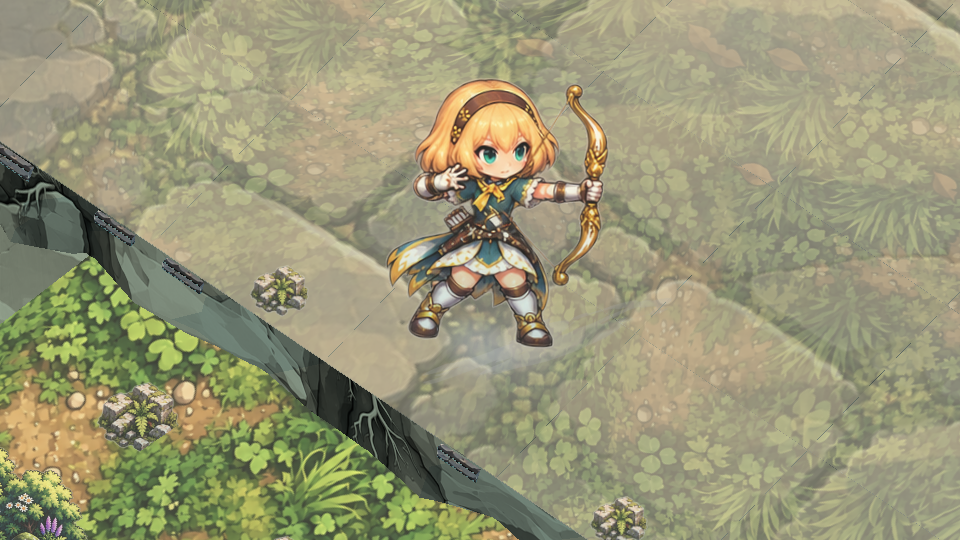
나탈리아 · 개선 후 · 일반 공격 접촉attack-release · 관측 경과 0.396초 · 게임 시간 630.224초 · Unity 프레임 91366 · natalia-roster-attack-front-1
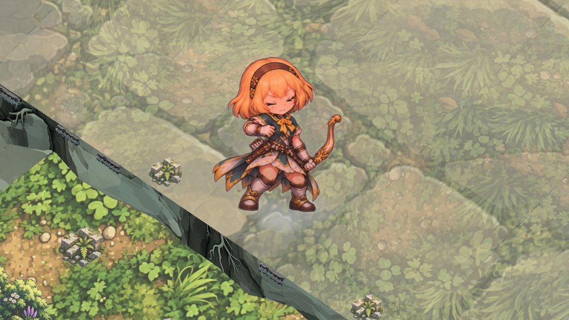
나탈리아 · 개선 후 · 피격damage · 관측 경과 0.062초 · 게임 시간 631.198초 · Unity 프레임 91383 · natalia-roster-damage-front-0
벨벳
정면에서 따로 관측한 순간입니다. 개선 전 대기는 크기·접지 비교 기준이며 개선 후 공격·피격과 같은 동작의 전후 비교가 아닙니다.
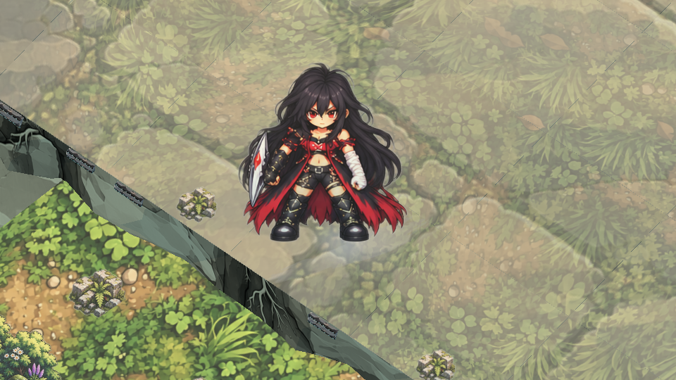
벨벳 · 개선 전 · 대기idle · 관측 경과 0.184초 · 게임 시간 668.974초 · Unity 프레임 95543 · velvet-hq_0_0
벨벳 · 개선 후 · 대기idle · 관측 경과 0.179초 · 게임 시간 703.416초 · Unity 프레임 98697 · velvet-roster-idle-front-0
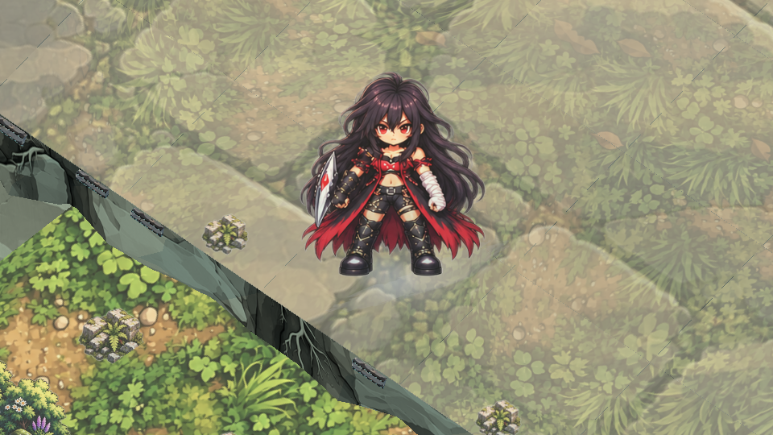
벨벳 · 개선 후 · 들숨idle · 관측 경과 0.522초 · 게임 시간 703.759초 · Unity 프레임 98734 · velvet-roster-idle-front-1
벨벳 · 개선 후 · 눈감음idle · 관측 경과 3.931초 · 게임 시간 707.168초 · Unity 프레임 99135 · velvet-roster-idle-front-2
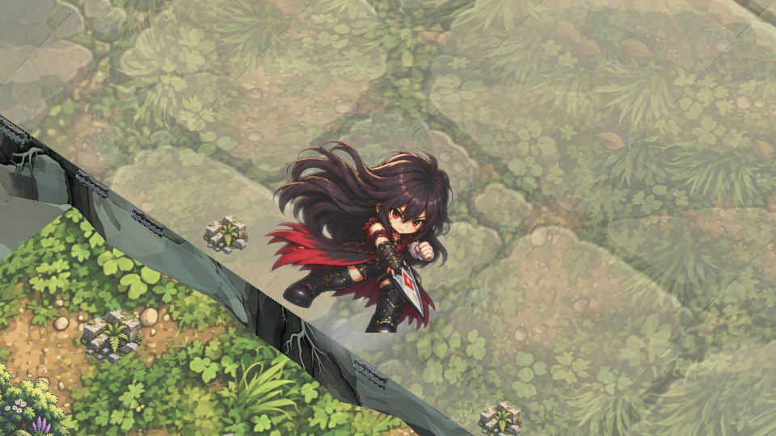
벨벳 · 개선 후 · 일반 공격 접촉attack-release · 관측 경과 0.422초 · 게임 시간 709.708초 · Unity 프레임 99392 · velvet-roster-attack-front-1
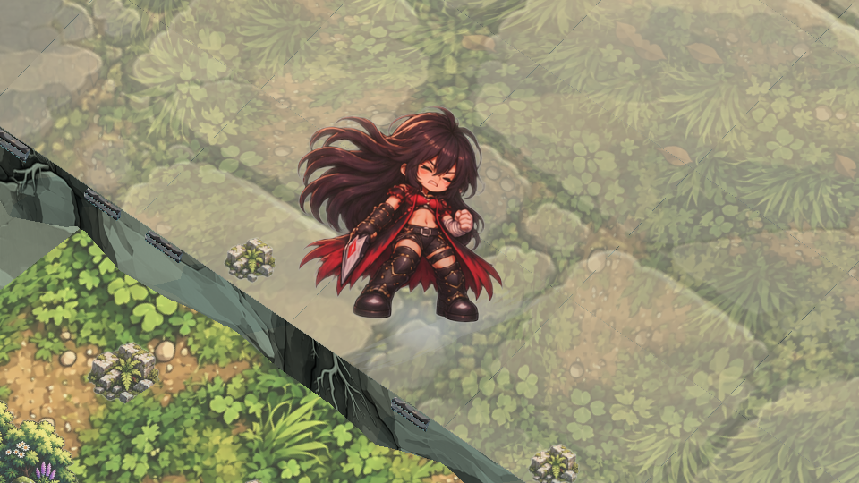
벨벳 · 개선 후 · 피격damage · 관측 경과 0.058초 · 게임 시간 710.638초 · Unity 프레임 99407 · velvet-roster-damage-front-0
알펜
정면에서 따로 관측한 순간입니다. 개선 전 대기는 크기·접지 비교 기준이며 개선 후 공격·피격과 같은 동작의 전후 비교가 아닙니다.
 알펜 · 개선 전 · 대기idle · 관측 경과 1.895초 · 게임 시간 747.090초 · Unity 프레임 103185 · alphen-pilot-idle-front-1
알펜 · 개선 전 · 대기idle · 관측 경과 1.895초 · 게임 시간 747.090초 · Unity 프레임 103185 · alphen-pilot-idle-front-1
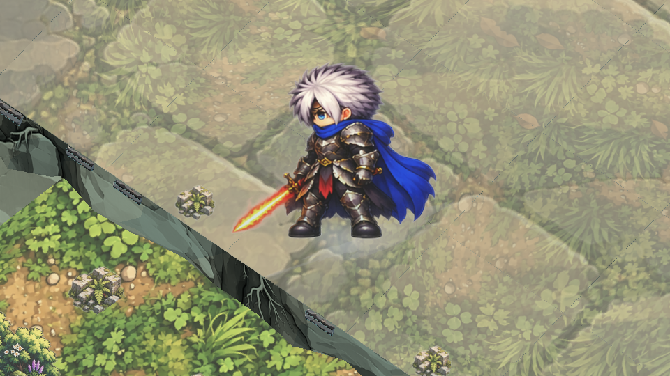
알펜 · 개선 후 · 대기idle · 관측 경과 1.882초 · 게임 시간 781.494초 · Unity 프레임 106366 · alphen-pilot-idle-front-0
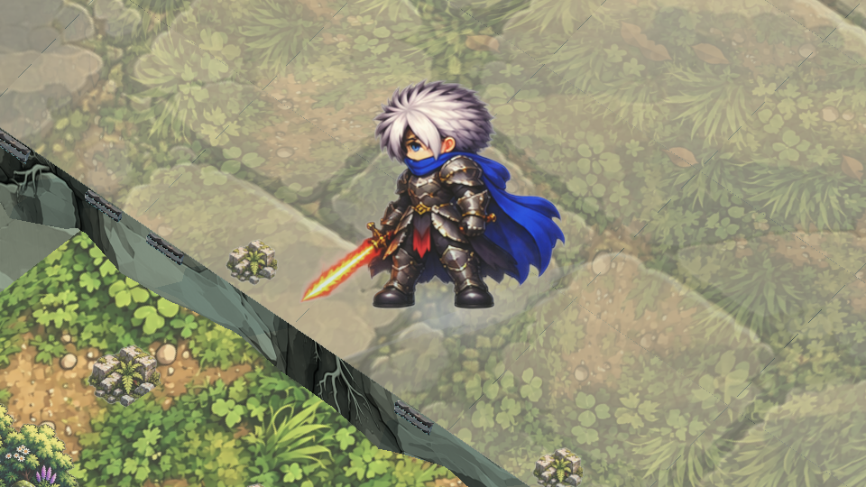
알펜 · 개선 후 · 들숨idle · 관측 경과 0.182초 · 게임 시간 779.793초 · Unity 프레임 106185 · alphen-pilot-idle-front-1
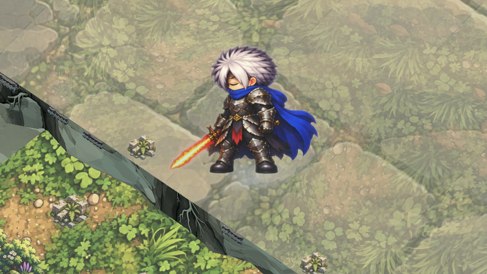
알펜 · 개선 후 · 눈감음idle · 관측 경과 3.587초 · 게임 시간 783.199초 · Unity 프레임 106565 · alphen-pilot-idle-front-2
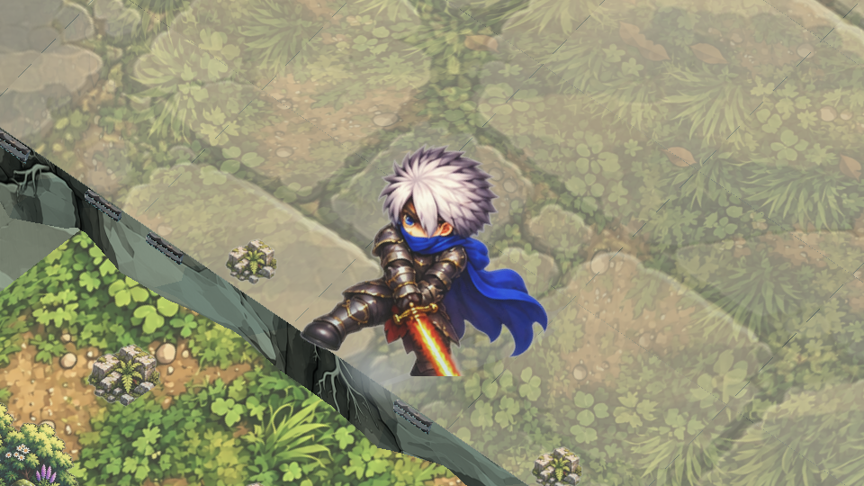
알펜 · 개선 후 · 일반 공격 접촉attack-release · 관측 경과 0.381초 · 게임 시간 786.061초 · Unity 프레임 106849 · alphen-pilot-attack-front-1
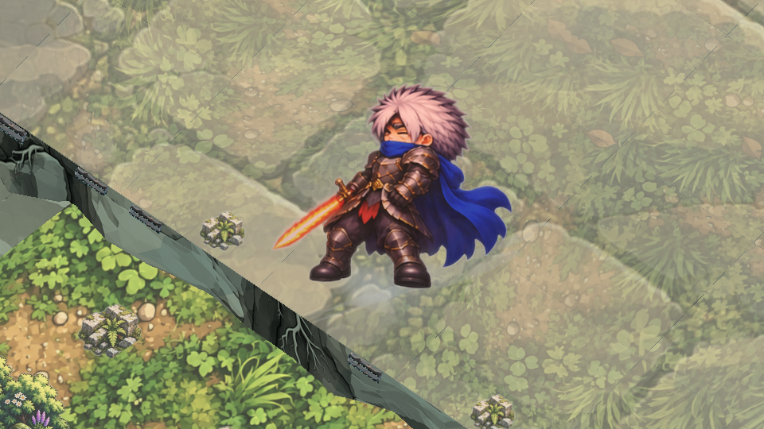
알펜 · 개선 후 · 피격damage · 관측 경과 0.057초 · 게임 시간 787.001초 · Unity 프레임 106866 · alphen-pilot-damage-front-0
시온
정면에서 따로 관측한 순간입니다. 개선 전 대기는 크기·접지 비교 기준이며 개선 후 공격·피격과 같은 동작의 전후 비교가 아닙니다.
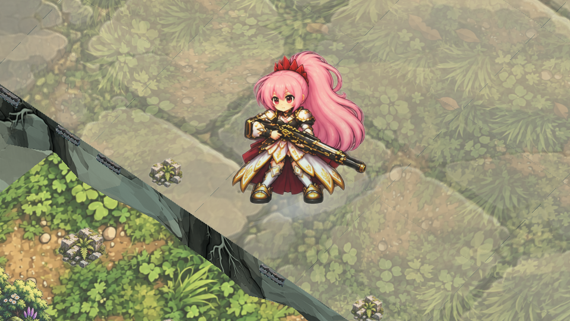
시온 · 개선 전 · 대기idle · 관측 경과 0.182초 · 게임 시간 815.752초 · Unity 프레임 109640 · shionne-hq_0_0
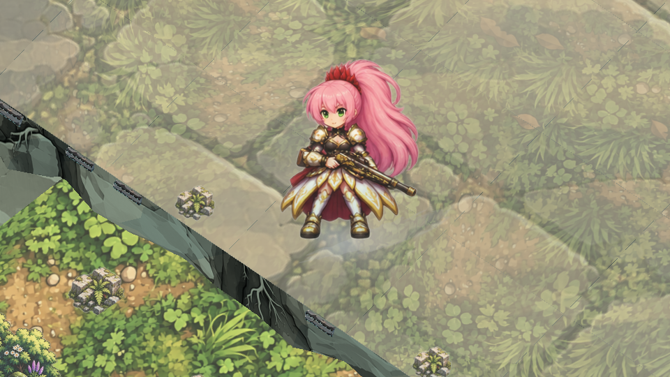
시온 · 개선 후 · 대기idle · 관측 경과 0.182초 · 게임 시간 850.115초 · Unity 프레임 112808 · shionne-roster-idle-front-0
시온 · 개선 후 · 들숨idle · 관측 경과 1.032초 · 게임 시간 850.965초 · Unity 프레임 112890 · shionne-roster-idle-front-1
시온 · 개선 후 · 눈감음idle · 관측 경과 4.428초 · 게임 시간 854.361초 · Unity 프레임 113288 · shionne-roster-idle-front-2
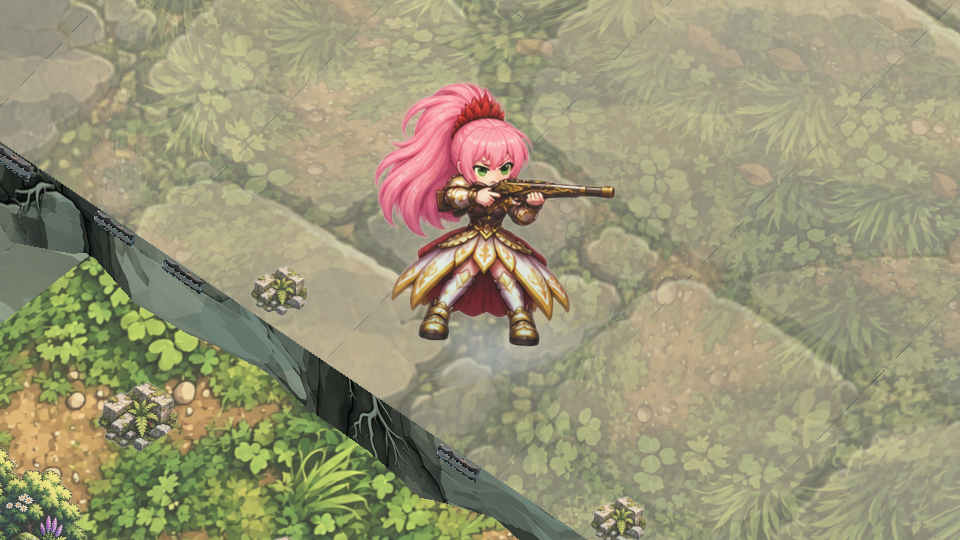
시온 · 개선 후 · 일반 공격 접촉attack-release · 관측 경과 0.395초 · 게임 시간 856.357초 · Unity 프레임 113445 · shionne-roster-attack-front-1
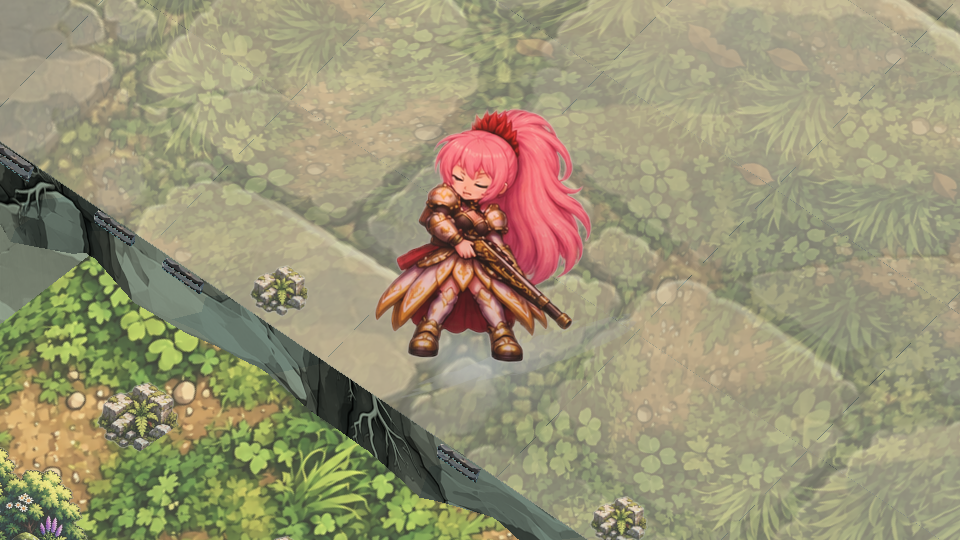
시온 · 개선 후 · 피격damage · 관측 경과 0.056초 · 게임 시간 857.304초 · Unity 프레임 113462 · shionne-roster-damage-front-0
키사라
정면에서 따로 관측한 순간입니다. 개선 전 대기는 크기·접지 비교 기준이며 개선 후 공격·피격과 같은 동작의 전후 비교가 아닙니다.
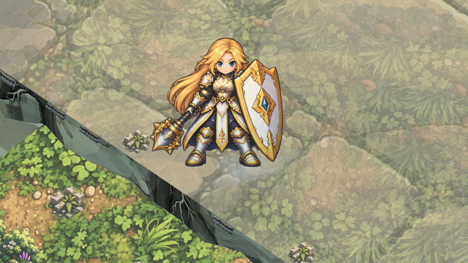
키사라 · 개선 전 · 대기idle · 관측 경과 0.201초 · 게임 시간 885.686초 · Unity 프레임 116049 · kisara-hq_0_0
키사라 · 개선 후 · 대기idle · 관측 경과 0.196초 · 게임 시간 920.082초 · Unity 프레임 119003 · kisara-roster-idle-front-0
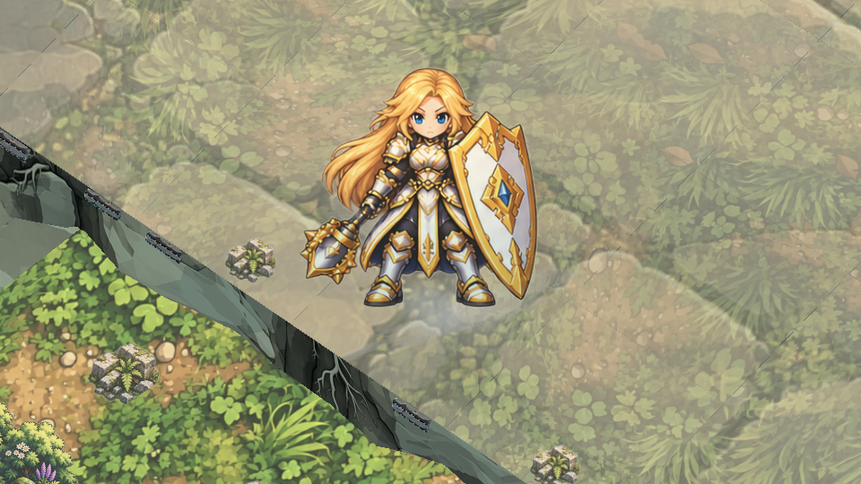
키사라 · 개선 후 · 들숨idle · 관측 경과 0.705초 · 게임 시간 920.592초 · Unity 프레임 119050 · kisara-roster-idle-front-1
키사라 · 개선 후 · 눈감음idle · 관측 경과 4.104초 · 게임 시간 923.991초 · Unity 프레임 119456 · kisara-roster-idle-front-2
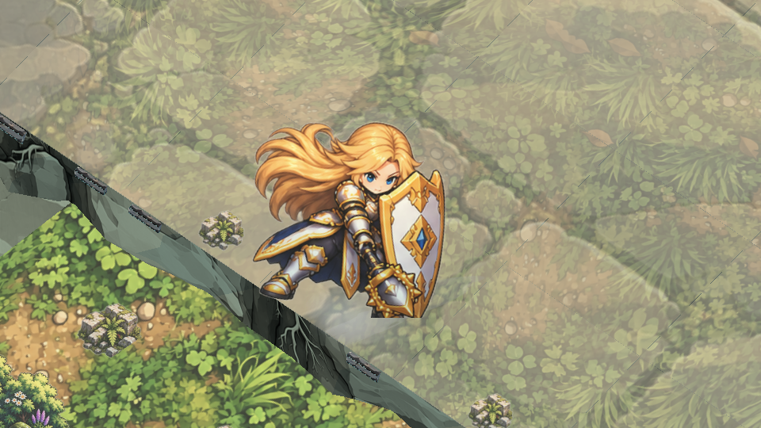
키사라 · 개선 후 · 일반 공격 접촉attack-release · 관측 경과 0.374초 · 게임 시간 926.328초 · Unity 프레임 119694 · kisara-roster-attack-front-1
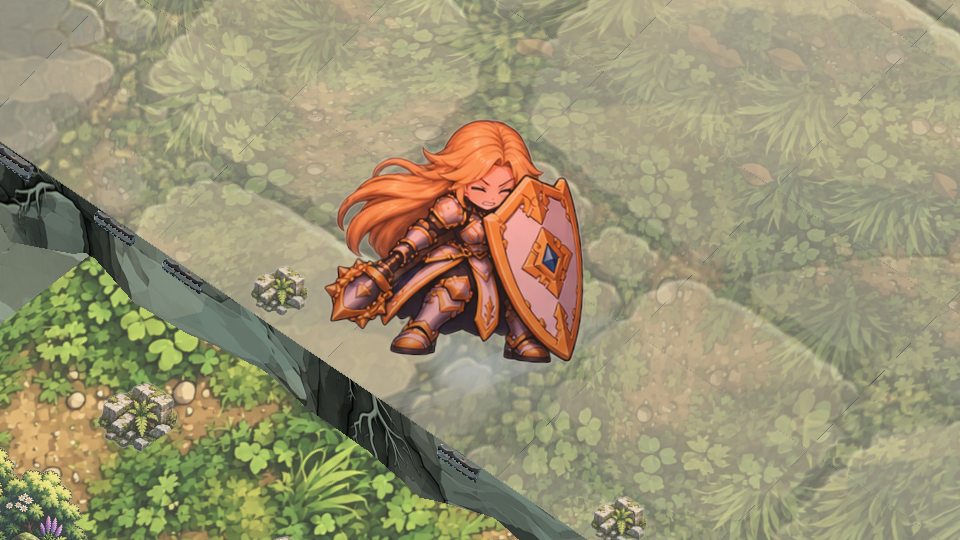
키사라 · 개선 후 · 피격damage · 관측 경과 0.064초 · 게임 시간 927.290초 · Unity 프레임 119711 · kisara-roster-damage-front-0
실제 대표 전장 6장
각 장면은 해당 동료를 포함한 임시 6명 편성입니다. 여섯 장 전체에서 관측된 동료: 크레스, 민트, 파라, 티아, 제이드, 나탈리아, 벨벳, 알펜, 시온, 키사라.
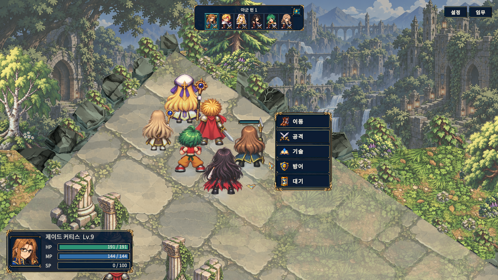
제이드 포함 편성 · idle1280×720 · idle · 회전 180° · 6화 전장 · 캡처 실행 구간 UTC 2026-11-24T20:23:42.9029124Z ~ 2026-11-24T20:23:44.4189900Z (개별 프레임 시각 미기록)
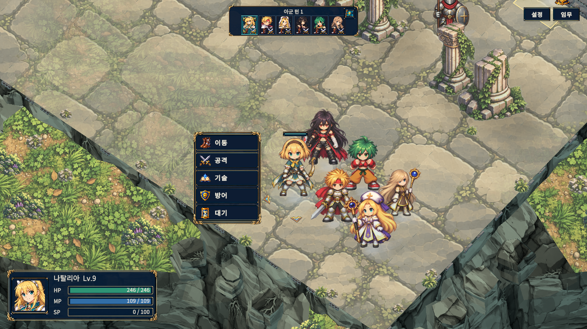
나탈리아 포함 편성 · idle1280×720 · idle · 회전 0° · 6화 전장 · 캡처 실행 구간 UTC 2026-11-24T20:23:47.1458934Z ~ 2026-11-24T20:23:48.9055918Z (개별 프레임 시각 미기록)
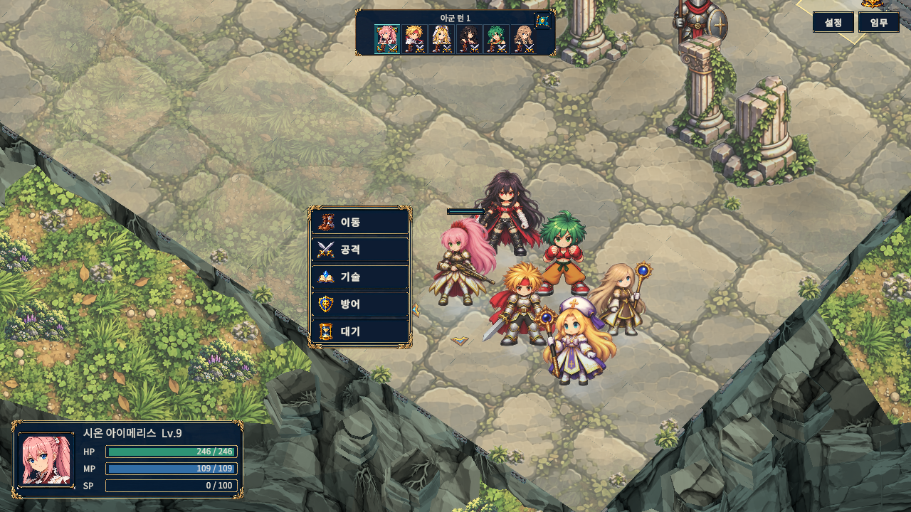
시온 포함 편성 · character-close1280×720 · character-close · 회전 0° · 6화 전장 · 캡처 실행 구간 UTC 2026-11-24T20:24:00.0270750Z ~ 2026-11-24T20:24:01.6997265Z (개별 프레임 시각 미기록)
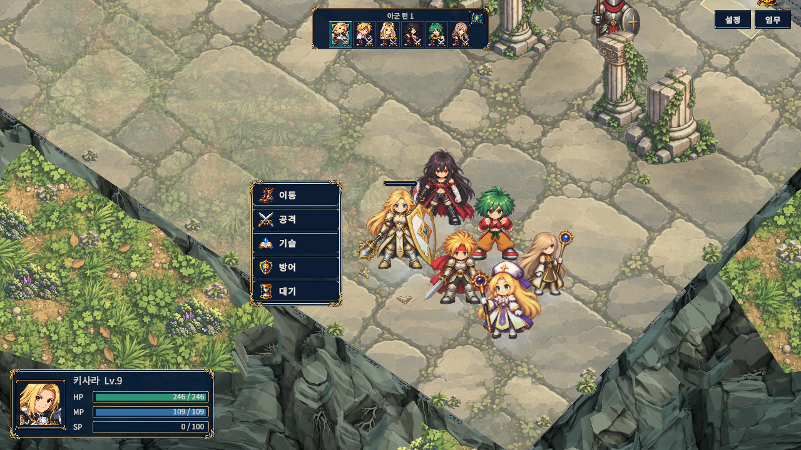
키사라 포함 편성 · idle1280×720 · idle · 회전 0° · 6화 전장 · 캡처 실행 구간 UTC 2026-11-24T20:24:04.3485498Z ~ 2026-11-24T20:24:06.0799397Z (개별 프레임 시각 미기록)
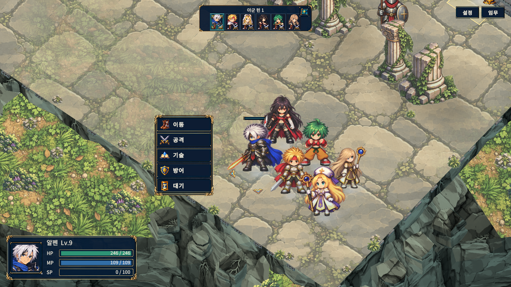
알펜 포함 편성 · idle1280×720 · idle · 회전 0° · 6화 전장 · 캡처 실행 구간 UTC 2026-11-24T20:23:55.7143463Z ~ 2026-11-24T20:23:57.4300412Z (개별 프레임 시각 미기록)
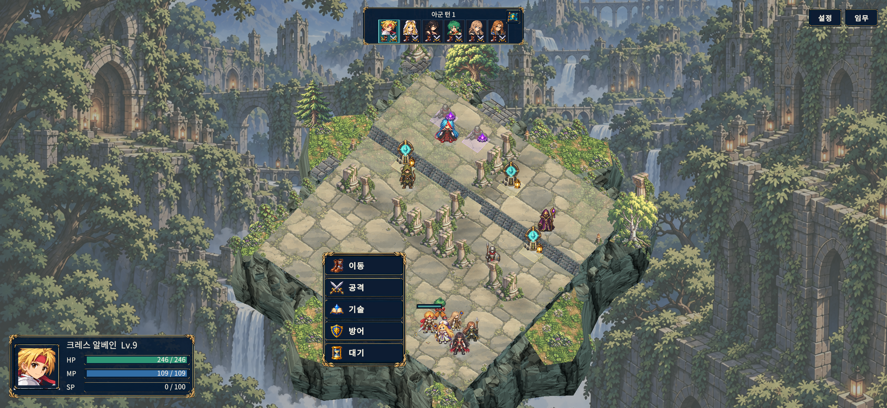
크레스 포함 편성 · command-ui2340×1080 · command-ui · 회전 0° · 6화 전장 · 캡처 실행 구간 UTC 2026-11-24T20:18:58.3948618Z ~ 2026-11-24T20:19:00.6562879Z (개별 프레임 시각 미기록)